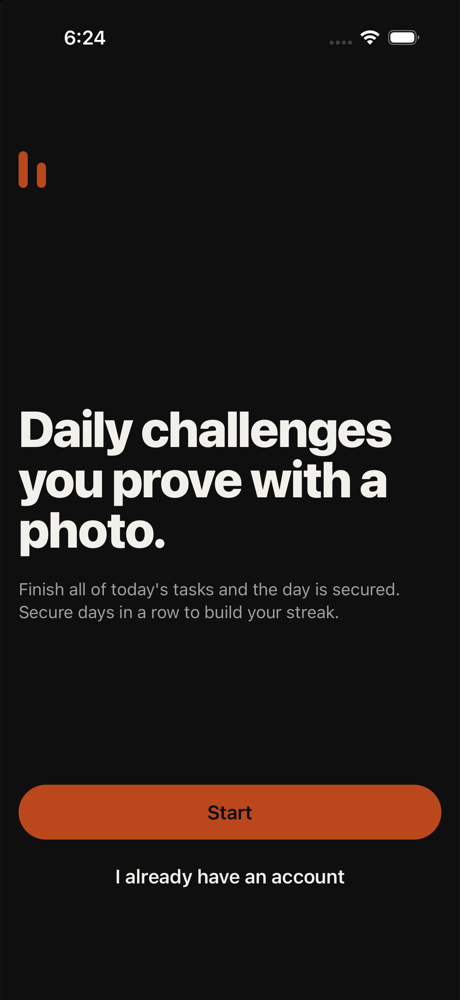
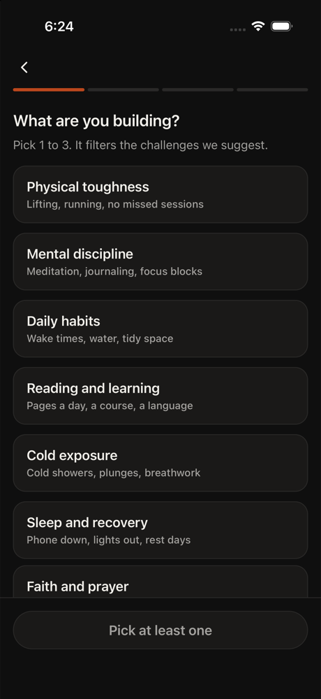
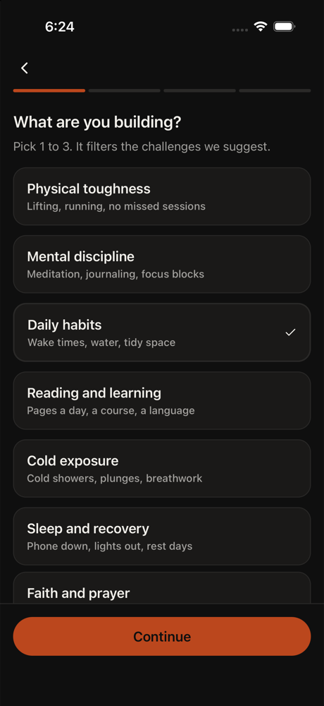
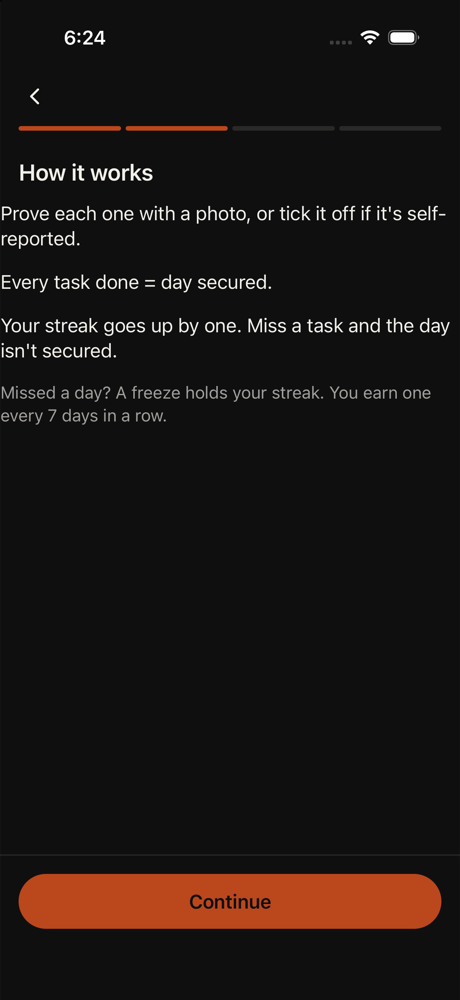
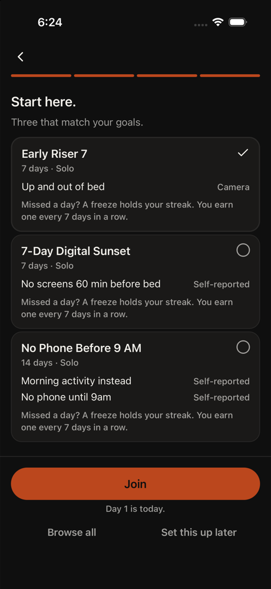
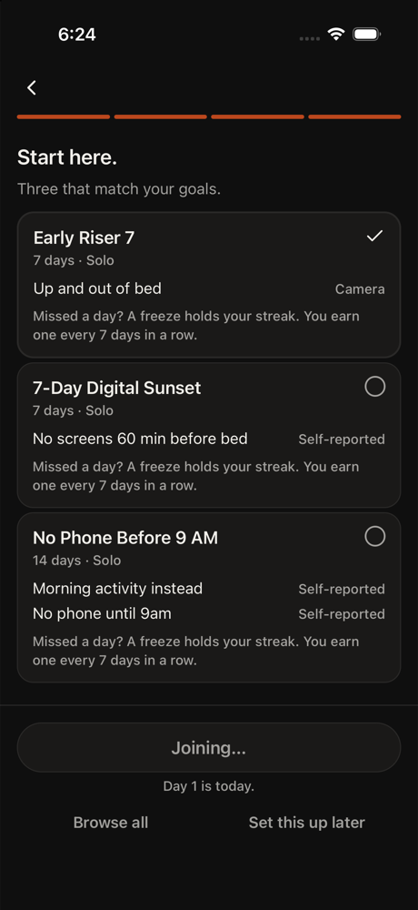
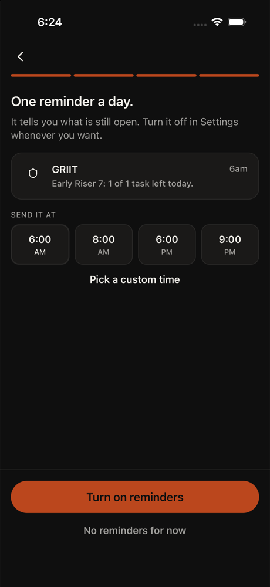
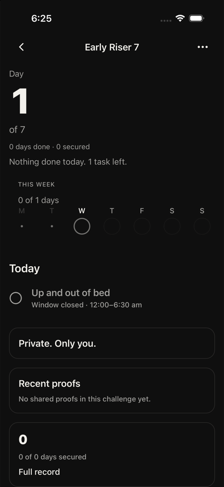
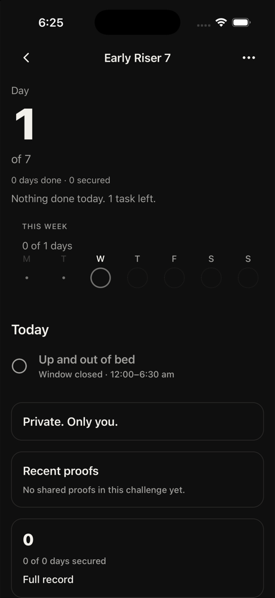

1. home tap Start
I'm tired and just want to get through onboarding quickly. Tapping Start to begin.
neutral · 13111ms
Nurse on night shift. Opens the app at 3 am. Tired.
Wants one small thing she can finish before sleep. Tech med, patience 2, phone large, text default, committed, English native.
Funnel stage: joined. Stages: opened → home → joined. Steps 10. 82s. is_test true. Gave up. home repeated 3 times.
GRIIT iPhone 16. Persona phone size was recorded and not applied, because this is the simulator that has the app installed. Text size applied: large. Cleanup: kept

1. home tap Start
I'm tired and just want to get through onboarding quickly. Tapping Start to begin.
neutral · 13111ms

2. onboarding tap Daily habits
I'm tired and need to finish quickly. Daily habits is simple and achievable - wake times, water, tidy space are straightforward. Picking this one to lock it in.
neutral · 3380ms

3. onboarding tap Continue
Daily habits is already selected. I'm tired and need to move forward quickly. Tapping Continue to proceed with onboarding.
neutral · 3466ms

4. home tap Continue
I'm tired and just want to get through this. The 'How it works' screen explains the mechanics - prove tasks with photos or self-report them. Each completed task secures the day. I understand it. Tapping Continue to move forward.
neutral · 3778ms

5. onboarding tap Join
I'm tired and just want to finish this. Early Riser 7 is already selected (I can see the checkmark). The Join button will commit me to this challenge and move me forward to the next step. Let me tap it.
neutral · 9130ms

6. auth tap Turn on reminders
I'm tired and just want to get through this. The reminder screen is asking me to pick a time or skip it. I'll turn on reminders at the default 6 AM since Early Riser 7 is my selected challenge and it makes sense for that goal. Moving forward.
neutral · 5410ms

7. home tap Open
I'm tired and need to finish one task. I can see 'Up and out of bed' is the task for Day 1. The 'Open' button will let me start and complete this task. Let me tap it to begin.
neutral · 5472ms
8. home tap Up and out of bed
I'm exhausted and need to finish this task. 'Up and out of bed' is showing as incomplete. I need to tap on it to open the task details so I can complete it and mark it done.
frustrated · 10444ms

9. home tap Up and out of bed
I'm exhausted and need to finish this task. I can see 'Up and out of bed' is the task for today. I need to tap on it to open the task details so I can complete it and mark it done. This is the only task left for Day 1.
frustrated · 4771ms

10. home abort
Error: Gave up. home repeated 3 times.
frustrated · 2117ms